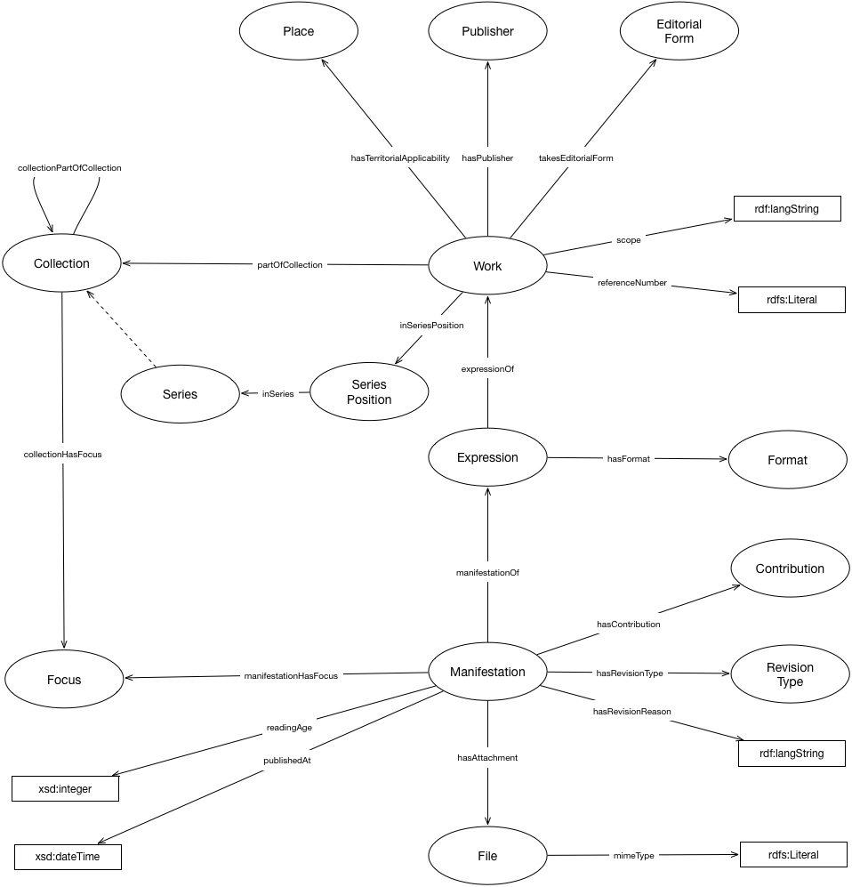

IRI: http://parliament.uk/ontologies/record/Collection
IRI: http://parliament.uk/ontologies/record/Contribution
IRI: http://parliament.uk/ontologies/record/EditorialForm
IRI: http://parliament.uk/ontologies/record/Expression
IRI: http://parliament.uk/ontologies/record/File
IRI: http://parliament.uk/ontologies/record/Focus
IRI: http://parliament.uk/ontologies/record/Format
IRI: http://parliament.uk/ontologies/record/Manifestation
IRI: http://parliament.uk/ontologies/record/Place
IRI: http://parliament.uk/ontologies/record/Publisher
IRI: http://parliament.uk/ontologies/record/RevisionType
IRI: http://parliament.uk/ontologies/record/Series
IRI: http://parliament.uk/ontologies/record/SeriesPosition
IRI: http://parliament.uk/ontologies/record/Work
IRI: http://parliament.uk/ontologies/record/collectionHasFocus
IRI: http://parliament.uk/ontologies/record/collectionPartOfCollection
IRI: http://parliament.uk/ontologies/record/expressionOf
IRI: http://parliament.uk/ontologies/record/hasAttachment
IRI: http://parliament.uk/ontologies/record/hasFormat
IRI: http://parliament.uk/ontologies/record/hasGeographicScope
IRI: http://parliament.uk/ontologies/record/hasPublisher
IRI: http://parliament.uk/ontologies/record/hasRevisionType
IRI: http://parliament.uk/ontologies/record/hasContribution
IRI: http://parliament.uk/ontologies/record/inSeries
IRI: http://parliament.uk/ontologies/record/inSeriesPosition
IRI: http://parliament.uk/ontologies/record/manifestationHasFocus
IRI: http://parliament.uk/ontologies/record/manifestationOf
IRI: http://parliament.uk/ontologies/record/partOfCollection
IRI: http://parliament.uk/ontologies/record/takesEditorialForm
IRI: http://parliament.uk/ontologies/record/hasRevisionDescription
IRI: http://parliament.uk/ontologies/record/mediaType
IRI: http://parliament.uk/ontologies/record/minimumReadingAge
IRI: http://parliament.uk/ontologies/record/publishedAt
IRI: http://parliament.uk/ontologies/record/referenceNumber
IRI: http://parliament.uk/ontologies/record/scope
This HTML document was obtained by processing the OWL ontology source code through LODE, Live OWL Documentation Environment, developed by Silvio Peroni.